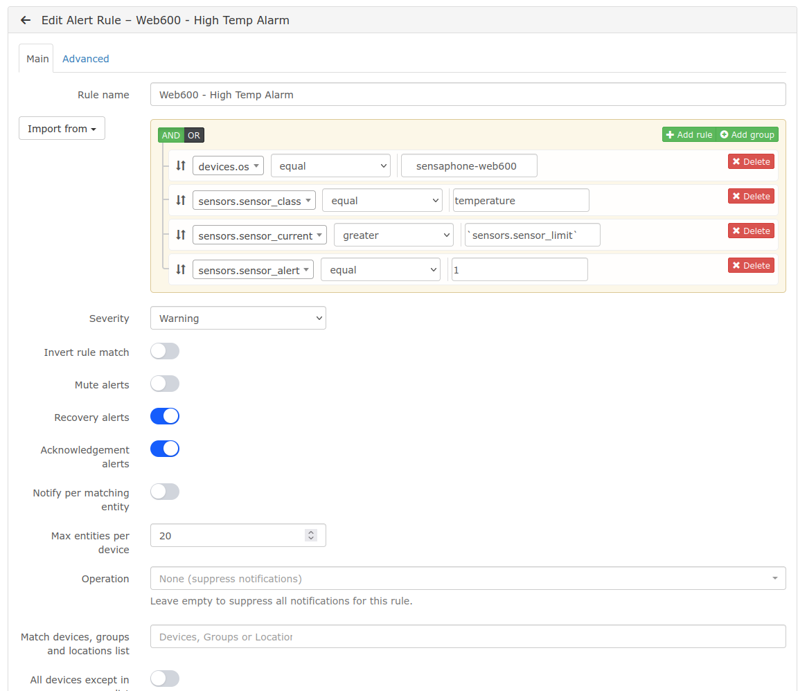

Install and discover
You’ll need LibreNMS with PHP 8.3 or later, write access to the LibreNMS directory, and a WEB600 reachable over SNMP from the poller.
The Linux installer defaults to /opt/librenms. After installation, add or
rediscover the WEB600 and check its sensors under Health.
git clone https://github.com/daryl-peterson/librenms-sensaphone-web600.git
cd librenms-sensaphone-web600
./install.shExample alert rules
-
Commercial power
Raise a critical alert when the configured commercial power contact enters an alarm state.
-
Door contact
Raise a warning when the configured door contact enters an alarm state.
-
High temperature
Raise a warning when a temperature reading exceeds the sensor’s upper limit.
